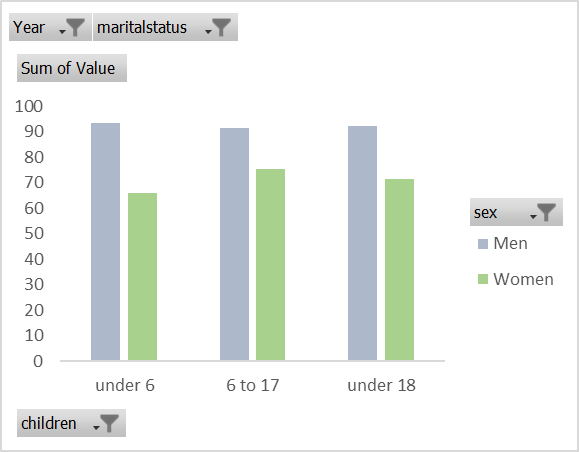
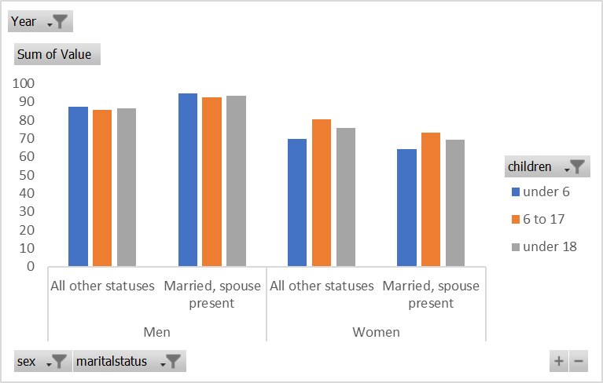

Mothers work less than fathers - regardless of the age of their children
U.S. labor force participation by gender and age of children, 2020
When a spouse is present, fathers work more, but mothers work less, regardless of age of children
U.S. labor force participation by gender, age of children, and marital status, 2020
The gender wage gap persists between mothers and fathers, regardless of age of children
Median weekly earnings in dollars by gender and age of children, 2020
Source: U.S. Bureau of Labor Statics, Current Population Survey
Notes: Labor force participation rate represents the percentage of parents in the civilian noninstitutional population 16 years of age and older that are employed or actively looking for work. Children are own children and include biological children, step-children, or adopted children. Estimates refer to co-residential children only.